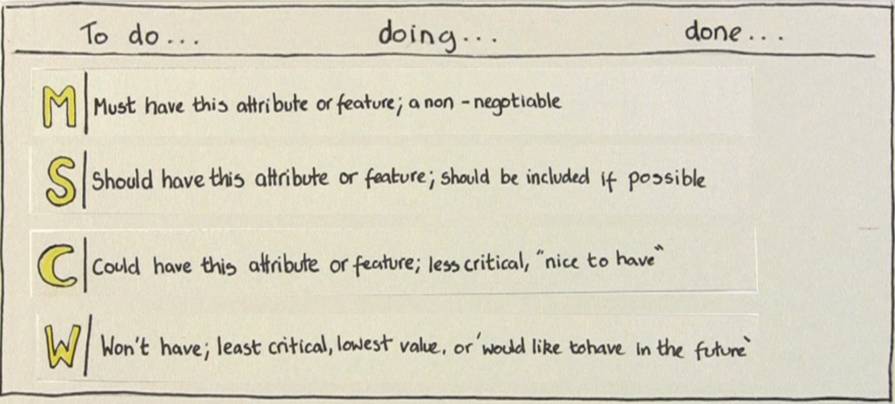
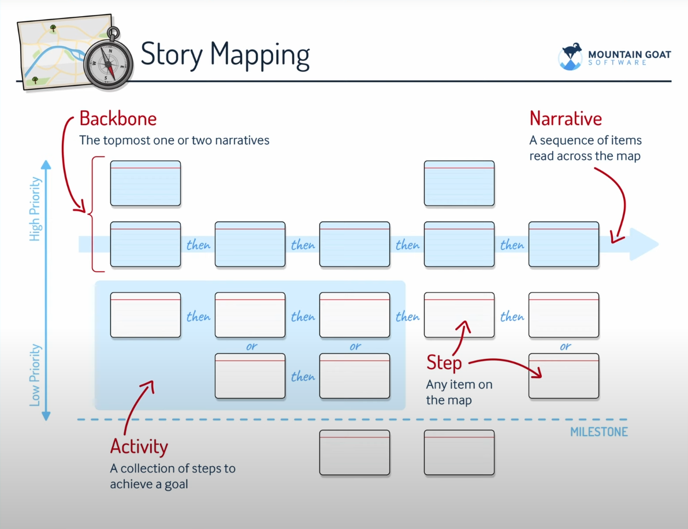
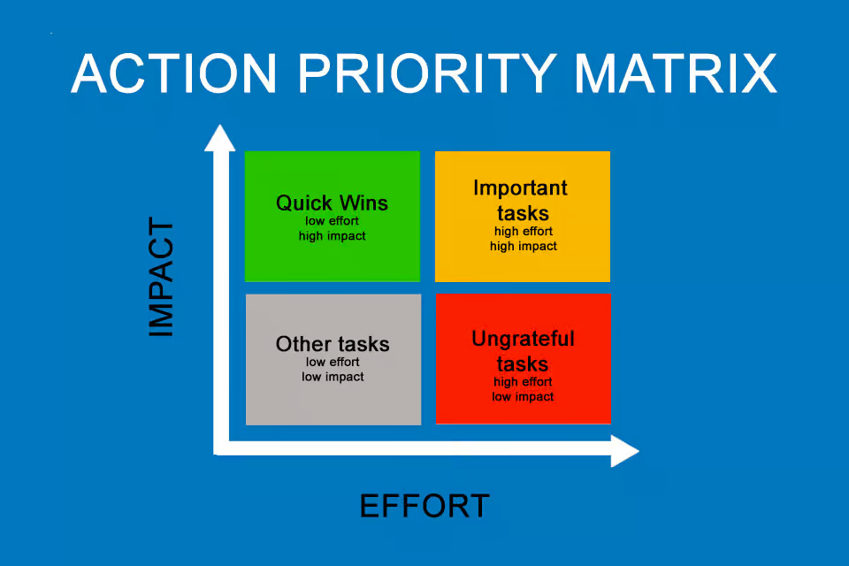

📌 Requisitos de Software¶
1. Introdução¶
Requisitos de software são descrições do que o sistema deve fazer e como ele deve funcionar.
Eles servem como um "contrato" entre o cliente e a equipe de desenvolvimento.
- Sem requisitos bem definidos → o sistema pode ser construído errado.
- Com requisitos claros → maior chance de sucesso no projeto.
Exemplo:
- Mal definido: "O sistema deve ser rápido."
- Bem definido: "O sistema deve responder em até 2 segundos em 95% das requisições."
2. Tipos de Requisitos¶
2.1 Funcionais¶
São as funções que o sistema precisa realizar.
- Cadastro de usuário
- Login e autenticação
- Geração de relatórios
👉 Respondem à pergunta: O que o sistema faz?
2.2 Não Funcionais¶
São restrições e qualidades do sistema.
- Desempenho (tempo de resposta, consumo de memória)
- Segurança (criptografia, controle de acesso)
- Usabilidade (interface amigável, acessibilidade)
👉 Respondem à pergunta: Como o sistema deve ser?
3. Elicitação de Requisitos¶
"Elicitar" significa levantar, coletar e descobrir requisitos junto às partes interessadas (stakeholders), que podem ser clientes, usuários finais, gestores ou até especialistas do negócio.
Esse processo geralmente começa em uma reunião inicial chamada Kick Off (pontapé inicial).
➡️ Nela, os principais representantes do cliente e da equipe de desenvolvimento se reúnem para alinhar objetivos, expectativas e problemas que o sistema precisa resolver.
Principais Técnicas de Elicitação:¶
- Entrevistas → conversar diretamente com usuários ou gestores para entender necessidades.
- Questionários → úteis quando há muitos usuários e é preciso coletar respostas em massa.
- Observação → acompanhar como os usuários realizam suas tarefas no dia a dia.
- Prototipação → criar esboços ou telas simples que ajudam a validar ideias antes da implementação.
👉 O objetivo da elicitação não é apenas coletar funcionalidades, mas entender o problema do cliente para que a solução desenvolvida realmente atenda às suas necessidades.¶
4. Modelagem e Documentação¶
Depois de coletar os requisitos, é preciso organizar e registrar.
Formas comuns:¶
- Casos de uso (UML) → mostram interações do usuário com o sistema.
- User stories (ágeis) → pequenas frases que descrevem funcionalidades.
- Exemplo: "Como aluno, quero acessar minhas notas online para acompanhar meu desempenho."
- Backlog de produto → lista priorizada de requisitos.
5. Validação e Verificação¶
- Validação: verificar se os requisitos realmente atendem às necessidades do cliente.
- Verificação: conferir se os requisitos foram implementados corretamente no sistema.
📌 Métodos:
- Revisões com stakeholders.
- Prototipagem validada.
- Testes de aceitação.
6. Gerenciamento de Requisitos¶
Durante o ciclo de vida de um projeto, é comum que os requisitos mudem.
Novas demandas podem surgir, outras se tornarem obsoletas, ou ainda precisarem de ajustes.
Por isso, não basta só elicitar requisitos: é necessário gerenciar.
Principais Atividades de Gerenciamento:¶
- Controle de mudanças
- Cada alteração deve ser registrada, avaliada e aprovada antes de ser implementada.
-
Isso evita que mudanças inesperadas prejudiquem o cronograma ou aumentem custos.
-
Rastreabilidade
- Significa acompanhar o “caminho” de cada requisito:
- Onde surgiu (usuário/cliente)
- Onde foi documentado
- Onde é implementado no código
- Onde é testado e validado
-
Isso ajuda a garantir que nada importante seja perdido.
-
Priorização
- Como os recursos (tempo, equipe, orçamento) são limitados, nem todos os requisitos podem ser feitos ao mesmo tempo.
- Para decidir o que vem primeiro, uma técnica simples e bastante usada é a MoSCoW (ou Impact/Effort Matrix no final do documento):
A Técnica MoSCoW¶
MoSCoW é um acrônimo que ajuda a classificar requisitos em quatro categorias:
➡️ Significado (imagem em ./assets/MoSCoW.png):

Retirado de: Agile in Practice: Prioritisation using MoSCoW
- Must Have (Deve ter) ✅
- Requisitos obrigatórios, sem eles o sistema não funciona.
-
Exemplo: “O usuário deve conseguir fazer login.”
-
Should Have (Deveria ter) 👍
- Muito importantes, mas não críticos. Podem ser entregues depois.
-
Exemplo: “O sistema deveria ter autenticação em dois fatores.”
-
Could Have (Poderia ter) ✨
- Funcionalidades desejáveis, mas opcionais.
-
Exemplo: “O sistema poderia ter modo escuro.”
-
Won’t Have (Não terá por agora) ❌
- Requisitos que foram discutidos, mas decididos para não serem implementados nesta versão.
- Exemplo: “Integração com redes sociais não será feita nesta release.”
👉 Essa técnica ajuda equipes a focarem no que realmente entrega valor ao usuário primeiro, deixando extras para depois.
7. Boas Práticas¶
- Escrever requisitos de forma clara e objetiva.
- Evitar termos ambíguos (rápido, fácil, eficiente).
- Manter os requisitos sempre atualizados.
- Validar constantemente com o cliente.
8. Exemplos Visuais¶
Story Map¶
O Story Map é uma técnica visual usada para organizar requisitos de software de forma que todos entendam como o usuário interage com o sistema.
➡️ Estrutura básica (imagem em ./assets/StoryMap.png):

Retirado de: User Story Mapping Tutorial (How to create, read, and use story maps)
Principais Conceitos do Story Map:¶
- Backbone → Linha superior com as narrativas principais (grandes funcionalidades).
- Narrativa → Sequência de passos lida na horizontal (mostra o fluxo da interação do usuário).
- Atividade → Conjunto de passos necessários para alcançar um objetivo.
- Step (Passo) → Qualquer item no mapa, representando uma ação do usuário.
- Prioridade → Itens mais importantes ficam no topo (alto valor para o usuário), os menos importantes abaixo.
- Milestones → Divisões que mostram entregas incrementais do sistema.
Por que usar Story Mapping?¶
- Ajuda a visualizar o produto inteiro.
- Facilita a priorização de funcionalidades.
- Mostra como os requisitos se conectam em jornadas de usuário.
- Útil em times ágeis, pois conecta requisitos com releases e backlog.
Matriz de Ação e Prioridade¶
A Action Priority Matrix é uma ferramenta visual usada para priorizar requisitos, tarefas ou funcionalidades com base em dois critérios:
- Esforço (Effort) → quanto trabalho ou recurso é necessário.
- Impacto (Impact) → quanto valor ou benefício traz para o usuário ou negócio.
➡️ Estrutura básica (imagem em ./assets/ActionPriorityMatrix.png):

Quadrantes da Matriz:¶
- Quick Wins (Vitórias Rápidas) 🟩
- Baixo esforço, alto impacto.
-
São as tarefas que devem ser priorizadas primeiro.
-
Important Tasks (Tarefas Importantes) 🟨
- Alto esforço, alto impacto.
-
Exigem mais tempo e recursos, mas trazem grande valor.
-
Other Tasks (Outras Tarefas) ⬜
- Baixo esforço, baixo impacto.
-
Podem ser feitas se sobrar tempo, mas não são prioridade.
-
Ungrateful Tasks (Tarefas Ingratas) 🟥
- Alto esforço, baixo impacto.
- Geralmente devem ser evitadas ou deixadas por último.
Por que usar essa matriz?¶
- Ajuda a decidir onde investir tempo e recursos.
- Facilita a gestão de requisitos quando há muitas demandas.
- Apoia a tomada de decisão ágil em times de software.
9. Conclusão¶
- Os requisitos de software são a base do desenvolvimento.
- Um projeto com requisitos mal definidos tende a falhar.
- Aprender a elicitar, documentar, validar e gerenciar requisitos é essencial para qualquer engenheiro de software.
10. Links/Bibliografia¶
Levantamento de Requisitos: O Guia Definitivo para QUALQUER PROJETO na Programação: https://www.youtube.com/watch?v=xEdGAC0qzgY
Requisito Funcional e Não Funcional de Software: entenda a diferença.:https://www.youtube.com/watch?v=YLd6AWKVyas
Definition of ready vs Definition of done | CT Academy: https://www.youtube.com/watch?v=kfSeI6Qvt_Q
User Story Mapping Tutorial (How to create, read, and use story maps): https://www.youtube.com/watch?v=uj3PlPDAlHU
Requisito Funcional e Não Funcional de Software: entenda a diferença.:https://www.youtube.com/watch?v=YLd6AWKVyas
Agile in Practice: Prioritisation using MoSCoW: https://www.youtube.com/watch?v=QfZo9cxnQgY
Documentação criada por Tiago Bittencourt: (@TiagoSBittencourt)